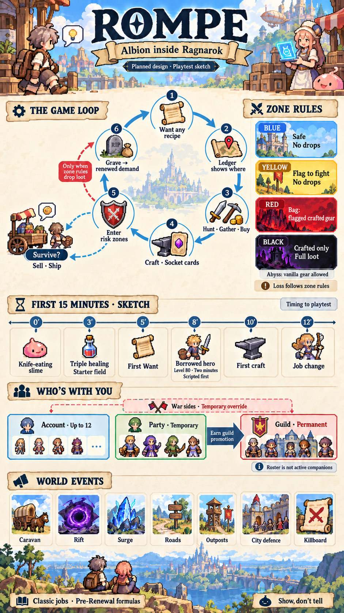

Visu · Project overview
ROMPE, at a glance.
A living overview built around the project’s own visual language. Start with the whole picture; open details only when you want them.
Source snapshot · 21 Oct 2026 · 07eabc1
The world, economy and riskOne illustrated overview

Illustrated concept · revision 02Choose a marker for source-linked detail
Overview revisions
Two real artwork iterations from source snapshot 21 Oct 2026 · 07eabc1.
Same project snapshot · this timeline records poster design changes, not project implementation progress.